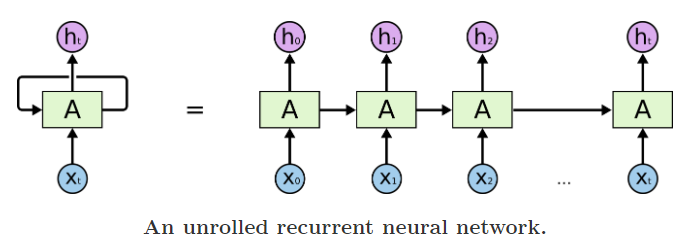

Agenda
- Why Language Modeling?
- A short introduction to Language Modeling
- How Transfer Learning Evolved
- Evolution of RNN units - RNN, LSTM, GRU, AWD-LSTM
- The RNN-based Transfer Learning Architectures - ULMFiT & ELMo
Why Language Modeling?
- The crux of Transfer Learning in 2 steps:
- Build a Language Model* that understands the underlying features of the text
- Fine-tune the Language Model with additional layers for downstream tasks
Why Language Model for pre-training?
Language modeling can be seen as the ideal source task as it captures many facets of language relevant for downstream tasks, such as long-term dependencies, hierarchical relations and sentiment (also being self-supervised)Ruder et al in the ULMFiT paper _______________________________________________________________________________________________________________
Introduction to Language Modeling
Language Model: A model of the probability of a sequence of words
- A language model can assign probability to each possible next word. And also, help in assigning a probability to an entire sentence.
Applications of Language Model
- Speech Recognition: E.g.: P(‘recognize speech’) >> P(‘wreck a nice beach’)
- Spelling Correction: E.g.: P(‘I have a gub’) << P(‘I have a gun’)
- Machine Translation: E.g.: P(‘strong winds’) > P(‘large winds’)
- Optical Character Recognition/ Handwriting Recognition
- Autoreply Suggestions
- Text Classification (discussed with python implementation of a simple N-gram model)
- Text Generation (discussed this with Char-level and Word-level language models) _______________________________________________________________________________________________________________
Evaluation Metrics for LM
(1) Perplexity
- A low perplexity indicates a better Language Model
(2) Log Probability
- Higher the log probability value of a LM in predicting a sample, higher is the confidence for that sample to occur in the distribution
my detailed notes on these 2 evaluation metrics of Language model is here
How Transfer Learning Evolved
- Stage1: NLP started with rule-based and statistical methodologies
- Stage2: ML algos such as Naive Bayes, SVM, Trees coupled with bag-of-words word representations
- Stage3: Recurrent Neural Networks such as LSTM
- Stage4: RNN based Seq2Seq Transfer Learning Architectures (ULMFit, ELMo, etc.,)
- Stage 5: Transformers –> ‘ImageNet’ moment in NLP
Source: Evolution of TL in NLP https://arxiv.org/pdf/1910.07370v1.pdf
Evolution of RNN units - RNN, LSTM, GRU, AWD-LSTM
Why RNNs came into existence? - Models such as the Multi-layer Perceptron Network, vector machines and logistic regression did not perform well on sequence modelling tasks (e.g.: text_sequence2sentiment_classification) - Why? Lack of memory element ; No information retention
Cometh the RNNs:
- RNNs attempted to redress this shortcoming by introducing loops within the network, thus allowing the retention of information.
An unrolled RNN 
Advantage of a vanilla RNN:
- Better than traditional ML algos in retaining information
Limitations of a vanilla RNN:
- RNNs fail to model long term dependencies.
- the information was often “forgotten” after the unit activations were multiplied several times by small numbers
- Vanishing gradient and exploding gradient problems
Long Short Term Memory (LSTM):
- a special type of RNN architecture
- designed to keep information retained for extended number of timesteps
- each LSTM cell consists of 4 layers (3 sigmoid functioins or gates and 1 tanh function)
- The 3 sigmoid functions are called
forget,updateandoutputgates
Gated Recurrent Unit (GRU)
- a curtailed version of LSTM
- retains the resisting vanishing gradient properties of LSTM but GRUs are internally simpler and faster than LSTMs. > 1/
forgetandupdategates from LSTM are merged into a singleupdategate
> 2/ The update gate decides how much of previous memory to keep around.
> 3/ There is aresetgate which defines how to combine new input with previous value.
If interested in the math behind the RNN architectures, refer this notebook I wrote in 2019
Comparison of performance between GRU and LSTM:
- GRUs are almost on par with LSTM but with efficient computation.
- However, with large data LSTMs with higher expressiveness may lead to better results
The RNN-based Transfer Learning Architectures - ULMFiT & ELMo
Some history and comparison with CV
Historically (before the Transformer era), - Fine-tuning a LM required millions of in-domain corpus (in other words, transfer learning was not possible) - LMs overfit to small datasets and suffered catastrophic forgetting when fine-tuned with a classifier
Source: - Evolution of TL in NLP: https://arxiv.org/pdf/1910.07370v1.pdf - ULMFiT paper: https://arxiv.org/pdf/1801.06146.pdf
ULMFit
- Universal Language Model Fine-tuning (ULMFiT) for Text Classification
- This paper introduces techniques that are essential to fine-tune an LSTM-based Language Model
- This paper specifically the superior performance of ULMFiT approach in 6 text classification datasets
What does ULMFiT propose?
- Pretrain a LM on a large general-domain corpus and fine-tune it on the target task (here, text classification) using novel* techniques
- Why called Universal (the following have become synonymous with what a TL model is):
- It works across tasks varying in document size, number, and label type
- it uses a single architecture and training process;
- it requires no custom feature engineering or preprocessing; and
- it does not require additional in-domain documents or labels
- What are the novel techniques:
- discriminative fine-tuning,
- slanted triangular learning rates, and
- gradual unfreezing
The Fine-tuning Differences in Computer Vision vs NLP
- Compared to CV models (which are several layers deep), NLP models are typically more shallow and thus require different fine-tuning methods
- Features in deep neural networks in CV have been observed to transition from general to task-specific from the first to the last layer.
- For this reason, most work in CV focuses on transferring the first layers of the model and fine-tuning the last or several of the last layers and leaving the remaining layers frozen
ULMFiT uses AWD-LSTM cell based Language Model
About AWD LSTM
- Average SGD Weight Dropped (AWD) LSTM
- It uses
DropConnectand a variant of Average-SGD (NT-ASGD) along with several other well-known regularization strategies
Why dropout won’t work? - Dropout, an algorithm that randomly(with a probability p) ignore units’ activations during the training phase allows for the regularization of a neural network. - By diminishing the probability of neurons developing inter-dependencies, it increases the individual power of a neuron and thus reduces overfitting. - However, dropout inhibits the RNNs capability of developing long term dependencies as there is loss of information caused due to randomly ignoring units activations.
Hence drop connect - the drop connect algorithm randomly drops weights instead of neuron activations. It does so by randomly(with probability 1-p) setting weights of the neural network to zero during the training phase. - Thus redressing the issue of information loss in the Recurrent Neural Network while still performing regularization.
 Source: Yashu Seth on AWD LSTM - https://yashuseth.blog/2018/09/12/awd-lstm-explanation-understanding-language-model/
Source: Yashu Seth on AWD LSTM - https://yashuseth.blog/2018/09/12/awd-lstm-explanation-understanding-language-model/
If interested in understanding the architecture of ULMFit in-depth, checkout my notebook from 2019 here
ELMo
- ELMo comes up with better
word representations/embeddingsusing Language Models that learn thecontextof the word in focus Ignore the hidden vectors predicting the padding tokens and only focus on the vectors that predict on the words source: https://medium.com/@plusepsilon/the-bidirectional-language-model-1f3961d1fb27
Ignore the hidden vectors predicting the padding tokens and only focus on the vectors that predict on the words source: https://medium.com/@plusepsilon/the-bidirectional-language-model-1f3961d1fb27
ELMo uses the Bi-directional Language Model to get a new embedding that will be concatenated with the initialized word embedding. The word “are” in the above figure will have a representation formed with the following embedding vectors
- Original embedding, GloVe, Word2Vec or FastText for example
- Forward pass hidden layer representation vector
- Backward pass hidden layer representation vector
About ELMo Word Vectors:
ELMo models both - (1) complex characteristics of word use (e.g., syntax and semantics) - (2) how these uses vary across linguistic contexts (i.e., to model polysemy)
- ELMo word vectors are learned functions of the internal states of a deep bidirectional language model (biLM), which is pretraind on a large text corpus
- ELMo assigns each token/word a representation that is function of the entire input sentence
- ELMo representations are deep, in the sense that they are a function of all of the internal layers of the biLM - In other words, ELMo doesn’t just use the top LSTM layer, but all the internal layers
- higher-level LSTM states capture context-dependent aspects of word meaning - lower-level states model aspects of syntax
ELMo does well in 6 diverse NLP tasks
| Task | Description | Comments about Dataset | Evaluation Parameter | Previous SOTA | ELMo SOTA |
|---|---|---|---|---|---|
| SQuAD | Stanford Question Answering Dataset | a reading comprehension dataset, consisting of questions posed by crowdworkers on a set of Wikipedia articles, where the answer to every question is a segment of text, or span, from the corresponding reading passage, or the question might be unanswerable | F1 score (harmonic mean of precision and recall) | 84.4 | 85.8 |
| SNLI | Stanford Natural Language Inference | SNLI corpus (version 1.0) is a collection of 570k human-written English sentence pairs manually labeled for balanced classification with the labels entailment, contradiction, and neutral, supporting the task of natural language inference (NLI), also known as recognizing textual entailment (RTE) | Accuracy | 88.6 | 88.7 |
| SRL | Semantic Role Labeling | Semantic Role Labeling (SRL) recovers the latent predicate argument structure of a sentence, providing representations that answer basic questions about sentence meaning, including “who” did “what” to “whom,” etc | F1 Score | 81.7 | 84.6 |
| Coref | Coreference resolution | Coreference resolution is the task of finding all expressions that refer to the same entity in a text. | Average F1 | 67.2 | 70.4 |
| NER | Named Entity Recognition | The named entity recognition model identifies named entities (people, locations, organizations, and miscellaneous) in the input text | F1 | 91.93 | 92.22 |
| SST-5 | 5-class Stanford Sentiment Treebank Dataset | fine-grained sentiment classification task uses 5 discrete classes: Strongly positive, Weakly positive, Neutral, Weakly negative, Strongly negative | Accuracy | 53.7 | 54.7 |
sources for the Task Description: - https://rajpurkar.github.io/SQuAD-explorer/ - https://nlp.stanford.edu/projects/snli/ - https://demo.allennlp.org/semantic-role-labeling/MTIzODQzNg== - https://demo.allennlp.org/coreference-resolution/MTIzODQzNA== - https://demo.allennlp.org/named-entity-recognition/MTIzODQzOA== - https://towardsdatascience.com/fine-grained-sentiment-analysis-in-python-part-1-2697bb111ed4
Pre-trained Bidirectional LM Architecture of ELMo:
Advantages of ELMo: - high-quality deep context-dependent representations are learned from biLMs - the biLM layers efficiently encode different types of syntactic and semantic information about words-in-context
Conclusion:
- I hope this blog gives a good understanding of the pre-transformer era history of Transfer Learning architectures in NLP
- I will cover more about BERT and Transformers in the upcoming articles